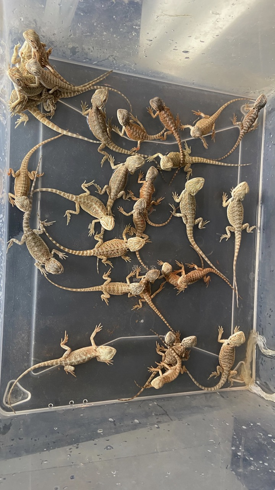

My hobby
Why lizards
I’ve been fond of lizards since my early childhood, but the final decision to have lizards as pets came during our trip to Miami, where the number of lizards per square meter sometimes exceeds the number of people.
Our lizards family
Upon returning home, we went straight to the pet store to find a pet. We wanted our pet to be domestic, social, easy to care for and interesting. All listed is about bearded dragons. So we got our first lizard, and then one after another 16 more ...
